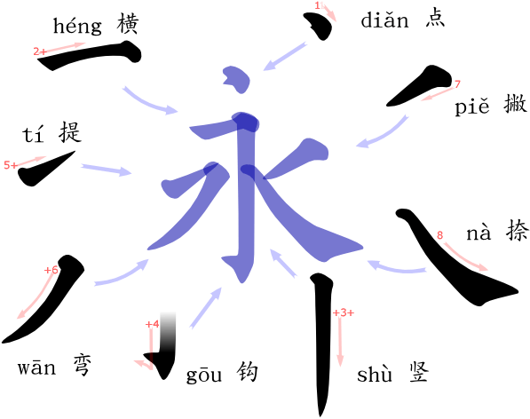
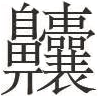
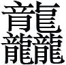
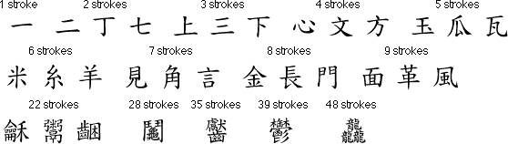
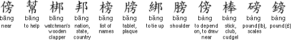
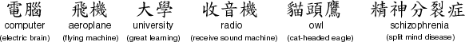
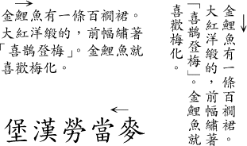
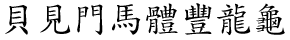
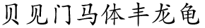

Tweet
Tweet
OCR software is also available for the Asian languages Japanese, Simplified Chinese, Traditional Chinese and Korean. (You probably wonder what “Simplified” and “Traditional” Chinese stand for: Simplified Chinese is used on China’s mainland and in Singapore, where Traditional Chinese is used by Hong Kong, Taiwan (R.O.C.), Macau and the overseas Chinese communities.)
Contrary to the Latin, Greek, Hebrew, Cyrillic and Hebrew alphabets, these languages indeed use small icons (“ideograms”), not letters, to represent reality.
Chinese script is derived from picture writing. It is written with thousands of distinctive characters called “ideograms” or “pictograms” which have no relation to the sound of a word. The earliest Chinese characters were pictographs, such as a crescent for the moon, or a circle with a dot in the center to represent the sun. Gradually these gave way to non-pictorial ideograms which, in addition to standing for tangible objects, also represented abstract concepts.
The majority of Chinese characters consist of two elements: a “signific”, which indicates the meaning of a word, and a “phonetic”, which indicates the sound.
Chinese is written with characters known as “hanzi”. Eight basic strokes are used to write Chinese characters.

A character may consist of between 1 and 48 strokes. The strokes are always written in the same direction and there is a set order to write the strokes of each character. In dictionaries, characters are ordered partly by the number of stokes they contain.
  
Each character represents a syllable in spoken Chinese. There are approximately 1,700 possible syllables in Mandarin, which compares with over 8,000 in English. As a result, there are many “homophones” — syllables which sound the same but mean different things. These are distinguished in written Chinese by using different characters for each one.
Not all the characters below are pronounced with the same tone, so to Chinese ears they sound different, even if they all sound the same to the untrained Western ear.

While verbs and adjectives in Chinese generally consist of one character (syllable), nouns often consist of two, three or more characters (syllables).

There are tens of thousands of characters, many of which are archaic or obscure. A large dictionary contains 40,000 to 50,000 characters, while the telegraphic code book comprises nearly 10,000 symbols. Knowledge of about 5,000 characters is sufficient to read modern standard written Chinese competently, which takes at least 5 years of full-time study to acquire. Some 3,000 symbols are used on daily basis.
Modern standard written Chinese is loosely based on the speech of educated Mandarin-speakers in northern China. Speakers of other varieties of Chinese have to learn the grammar and vocabulary of Mandarin Chinese in order to read and write Chinese. Written and spoken Chinese differ to the extent that written Chinese is often incomprehensible when read aloud. This is because many writers adopt a semi-classical style and pepper their scribblings with archaic and obscure vocabulary.
Chinese can be written vertically and from right to left or horizontally from left to right. Shop signs and some newspaper headlines are written horizontally from right to left.

Simplified Chinese is used on China’s mainland and in Singapore. Traditional Chinese characters are used in Taiwan (R.O.C.), Hong Kong and Macau and by many overseas Chinese communities.
Simplified Chinese is a simplified version of the “traditional” Chinese. Since 1949, in an effort to eradicate illiteracy, the government of the People’s Republic of China (P.R.C.) has simplified the 500 most common Chinese characters.
Many simplified characters are based on commonly used handwritten shortcuts, others retain only one element from the traditional character, and some replace the phonetic element of the character with a simpler one that is pronounced in the same way.
 
Which languages can OCR software read? — The history of the alphabets – Latin alphabet — Latin punctuation — Greek alphabet — Cyrillic (Russian) alphabet — Hebrew alphabet — Arabic alphabet — Let’s go East – Chinese alphabet — Japanese alphabet — Korean alphabet — Asian punctuation
Home page — Intro — Scanners — Images — History — OCR — Languages — Accuracy — Output — BCR — Pen scanners — Sitemap — Search — Contact – Feedback